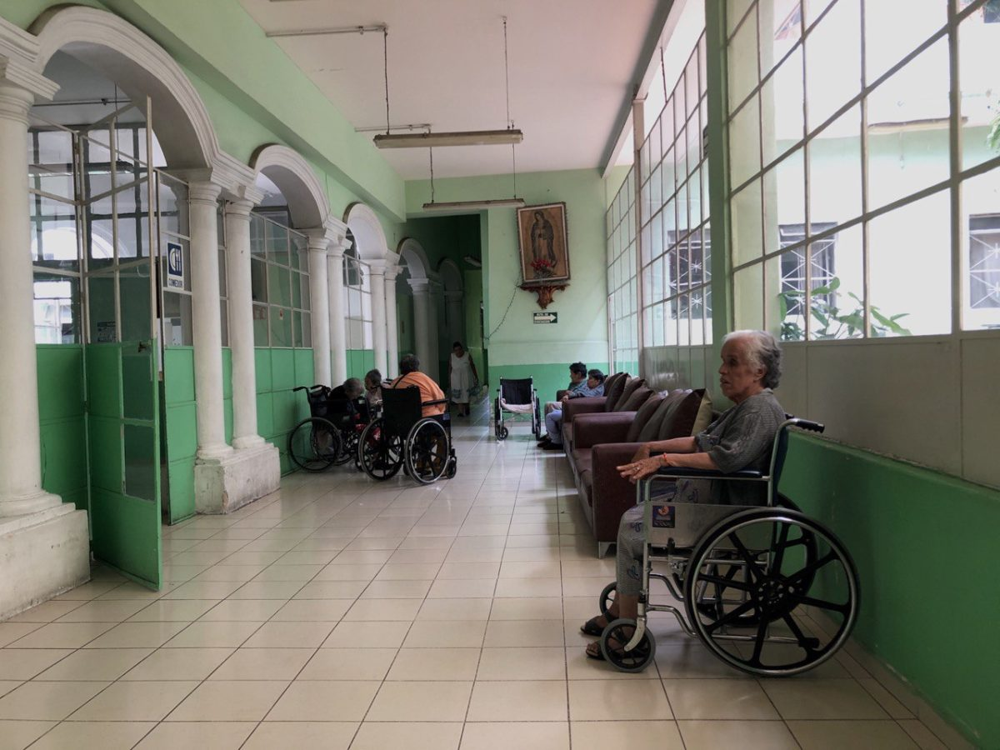

Instituições Parceiras
Conheça as instituições que fazem a diferença e precisam da sua ajuda!
Lar Luz do Amanhã
Apoia crianças e adolescentes em situação de vulnerabilidade, oferecendo educação, alimentação e carinho. Necessitam de doações de alimentos, material escolar e roupas.
Doar para esta Instituição

Abrigo Melhor Idade
Cuidado e conforto para idosos que não possuem suporte familiar. Precisam de fraldas geriátricas, medicamentos, itens de higiene pessoal e voluntários para atividades recreativas.
Doar para esta InstituiçãoProjeto Alimentação Solidária
Distribui refeições nutritivas para pessoas em situação de rua e famílias carentes. Doações de alimentos não perecíveis e apoio financeiro são sempre bem-vindos.
Doar para esta Instituição